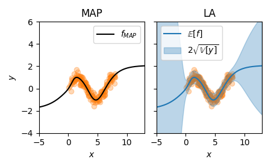
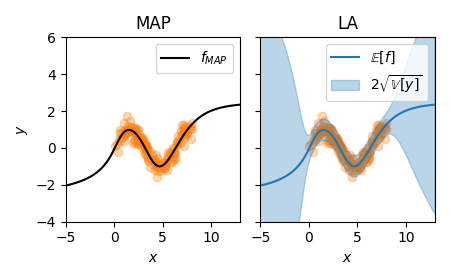

Package laplace

The laplace package facilitates the application of Laplace approximations for entire neural networks, subnetworks of neural networks, or just their last layer. The package enables posterior approximations, marginal-likelihood estimation, and various posterior predictive computations. The library documentation is available at https://aleximmer.github.io/Laplace.
There is also a corresponding paper, Laplace Redux — Effortless Bayesian Deep Learning, which introduces the library, provides an introduction to the Laplace approximation, reviews its use in deep learning, and empirically demonstrates its versatility and competitiveness. Please consider referring to the paper when using our library:
@inproceedings{laplace2021,
title={Laplace Redux--Effortless {B}ayesian Deep Learning},
author={Erik Daxberger and Agustinus Kristiadi and Alexander Immer
and Runa Eschenhagen and Matthias Bauer and Philipp Hennig},
booktitle={{N}eur{IPS}},
year={2021}
}
Setup
We assume python3.8 since the package was developed with that version.
To install laplace with pip, run the following:
pip install laplace-torch
For development purposes, clone the repository and then install:
# or after cloning the repository for development
pip install -e .
# run tests
pip install -e .[tests]
pytest tests/
Structure
The laplace package consists of two main components:
- The subclasses of
laplace.BaseLaplacethat implement different sparsity structures: different subsets of weights ('all','subnetwork'and'last_layer') and different structures of the Hessian approximation ('full','kron','lowrank'and'diag'). This results in eight currently available options:FullLaplace,KronLaplace,DiagLaplace, the corresponding last-layer variationsFullLLLaplace,KronLLLaplace, andDiagLLLaplace(which are all subclasses oflaplace.LLLaplace),laplace.SubnetLaplace(which only supports a'full'Hessian approximation) andLowRankLaplace(which only supports inference over'all'weights). All of these can be conveniently accessed via thelaplace.Laplacefunction. - The backends in
laplace.curvaturewhich provide access to Hessian approximations of the corresponding sparsity structures, for example, the diagonal GGN.
Additionally, the package provides utilities for
decomposing a neural network into feature extractor and last layer for LLLaplace subclasses (laplace.utils.feature_extractor)
and
effectively dealing with Kronecker factors (laplace.utils.matrix).
Finally, the package implements several options to select/specify a subnetwork for SubnetLaplace (as subclasses of laplace.utils.subnetmask.SubnetMask).
Automatic subnetwork selection strategies include: uniformly at random (RandomSubnetMask), by largest parameter magnitudes (LargestMagnitudeSubnetMask), and by largest marginal parameter variances (LargestVarianceDiagLaplaceSubnetMask and LargestVarianceSWAGSubnetMask).
In addition to that, subnetworks can also be specified manually, by listing the names of either the model parameters (ParamNameSubnetMask) or modules (ModuleNameSubnetMask) to perform Laplace inference over.
Extendability
To extend the laplace package, new BaseLaplace subclasses can be designed, for example,
Laplace with a block-diagonal Hessian structure.
One can also implement custom subnetwork selection strategies as new subclasses of SubnetMask.
Alternatively, extending or integrating backends (subclasses of curvature.curvature) allows to provide different Hessian
approximations to the Laplace approximations.
For example, currently the curvature.BackPackInterface based on BackPACK and curvature.AsdlInterface based on ASDL are available.
The AsdlInterface provides a Kronecker factored empirical Fisher while the BackPackInterface
does not, and only the BackPackInterface provides access to Hessian approximations
for a regression (MSELoss) loss function.
Example usage
Post-hoc prior precision tuning of diagonal LA
In the following example, a pre-trained model is loaded,
then the Laplace approximation is fit to the training data
(using a diagonal Hessian approximation over all parameters),
and the prior precision is optimized with cross-validation 'CV'.
After that, the resulting LA is used for prediction with
the 'probit' predictive for classification.
from laplace import Laplace
# Pre-trained model
model = load_map_model()
# User-specified LA flavor
la = Laplace(model, 'classification',
subset_of_weights='all',
hessian_structure='diag')
la.fit(train_loader)
la.optimize_prior_precision(method='CV', val_loader=val_loader)
# User-specified predictive approx.
pred = la(x, link_approx='probit')
Differentiating the log marginal likelihood w.r.t. hyperparameters
The marginal likelihood can be used for model selection [10] and is differentiable for continuous hyperparameters like the prior precision or observation noise. Here, we fit the library default, KFAC last-layer LA and differentiate the log marginal likelihood.
from laplace import Laplace
# Un- or pre-trained model
model = load_model()
# Default to recommended last-layer KFAC LA:
la = Laplace(model, likelihood='regression')
la.fit(train_loader)
# ML w.r.t. prior precision and observation noise
ml = la.log_marginal_likelihood(prior_prec, obs_noise)
ml.backward()
Applying the LA over only a subset of the model parameters
This example shows how to fit the Laplace approximation over only a subnetwork within a neural network (while keeping all other parameters fixed at their MAP estimates), as proposed in [11]. It also exemplifies different ways to specify the subnetwork to perform inference over.
from laplace import Laplace
# Pre-trained model
model = load_model()
# Examples of different ways to specify the subnetwork
# via indices of the vectorized model parameters
#
# Example 1: select the 128 parameters with the largest magnitude
from laplace.utils import LargestMagnitudeSubnetMask
subnetwork_mask = LargestMagnitudeSubnetMask(model, n_params_subnet=128)
subnetwork_indices = subnetwork_mask.select()
# Example 2: specify the layers that define the subnetwork
from laplace.utils import ModuleNameSubnetMask
subnetwork_mask = ModuleNameSubnetMask(model, module_names=['layer.1', 'layer.3'])
subnetwork_mask.select()
subnetwork_indices = subnetwork_mask.indices
# Example 3: manually define the subnetwork via custom subnetwork indices
import torch
subnetwork_indices = torch.tensor([0, 4, 11, 42, 123, 2021])
# Define and fit subnetwork LA using the specified subnetwork indices
la = Laplace(model, 'classification',
subset_of_weights='subnetwork',
hessian_structure='full',
subnetwork_indices=subnetwork_indices)
la.fit(train_loader)
Documentation
The documentation is available here or can be generated and/or viewed locally:
# assuming the repository was cloned
pip install -e .[docs]
# create docs and write to html
bash update_docs.sh
# .. or serve the docs directly
pdoc --http 0.0.0.0:8080 laplace --template-dir template
References
This package relies on various improvements to the Laplace approximation for neural networks, which was originally due to MacKay [1]. Please consider citing the respective papers if you use any of their proposed methods via our laplace library.
- [1] MacKay, DJC. A Practical Bayesian Framework for Backpropagation Networks. Neural Computation 1992.
- [2] Gibbs, M. N. Bayesian Gaussian Processes for Regression and Classification. PhD Thesis 1997.
- [3] Snoek, J., Rippel, O., Swersky, K., Kiros, R., Satish, N., Sundaram, N., Patwary, M., Prabhat, M., Adams, R. Scalable Bayesian Optimization Using Deep Neural Networks. ICML 2015.
- [4] Ritter, H., Botev, A., Barber, D. A Scalable Laplace Approximation for Neural Networks. ICLR 2018.
- [5] Foong, A. Y., Li, Y., Hernández-Lobato, J. M., Turner, R. E. 'In-Between' Uncertainty in Bayesian Neural Networks. ICML UDL Workshop 2019.
- [6] Khan, M. E., Immer, A., Abedi, E., Korzepa, M. Approximate Inference Turns Deep Networks into Gaussian Processes. NeurIPS 2019.
- [7] Kristiadi, A., Hein, M., Hennig, P. Being Bayesian, Even Just a Bit, Fixes Overconfidence in ReLU Networks. ICML 2020.
- [8] Immer, A., Korzepa, M., Bauer, M. Improving predictions of Bayesian neural nets via local linearization. AISTATS 2021.
- [9] Sharma, A., Azizan, N., Pavone, M. Sketching Curvature for Efficient Out-of-Distribution Detection for Deep Neural Networks. UAI 2021.
- [10] Immer, A., Bauer, M., Fortuin, V., Rätsch, G., Khan, EM. Scalable Marginal Likelihood Estimation for Model Selection in Deep Learning. ICML 2021.
- [11] Daxberger, E., Nalisnick, E., Allingham, JU., Antorán, J., Hernández-Lobato, JM. Bayesian Deep Learning via Subnetwork Inference. ICML 2021.
Full example: Optimization of the marginal likelihood and prediction
Sinusoidal toy data
We show how the marginal likelihood can be used after training a MAP network on a simple sinusoidal regression task.
Subsequently, we use the optimized LA to predict which provides uncertainty on top of the MAP prediction.
We also show how the marglik_training() utility method can be used to jointly train the MAP and hyperparameters.
First, we set up the training data for the problem with observation noise \(\sigma=0.3\):
from laplace.baselaplace import FullLaplace
from laplace.curvature.backpack import BackPackGGN
import numpy as np
import torch
from laplace import Laplace, marglik_training
from helper.dataloaders import get_sinusoid_example
from helper.util import plot_regression
n_epochs = 1000
torch.manual_seed(711)
# sample toy data example
X_train, y_train, train_loader, X_test = get_sinusoid_example(sigma_noise=0.3)
Training a MAP
We now use pytorch to train a neural network with single hidden layer and Tanh activation.
The trained neural network will be our MAP estimate.
This is standard so nothing new here, yet:
# create and train MAP model
def get_model():
torch.manual_seed(711)
return torch.nn.Sequential(
torch.nn.Linear(1, 50), torch.nn.Tanh(), torch.nn.Linear(50, 1)
)
model = get_model()
criterion = torch.nn.MSELoss()
optimizer = torch.optim.Adam(model.parameters(), lr=1e-2)
for i in range(n_epochs):
for X, y in train_loader:
optimizer.zero_grad()
loss = criterion(model(X), y)
loss.backward()
optimizer.step()
Fitting and optimizing the Laplace approximation using empirical Bayes
With the MAP-trained model at hand, we can estimate the prior precision and observation noise
using empirical Bayes after training.
The Laplace() method is called to construct a LA for 'regression' with 'all' weights.
As default Laplace() returns a Kronecker factored LA, we use 'full' instead on this small example.
We fit the LA to the training data and initialize log_prior and log_sigma.
Using Adam, we minimize the negative log marginal likelihood for n_epochs.
la = Laplace(model, 'regression', subset_of_weights='all', hessian_structure='full')
la.fit(train_loader)
log_prior, log_sigma = torch.ones(1, requires_grad=True), torch.ones(1, requires_grad=True)
hyper_optimizer = torch.optim.Adam([log_prior, log_sigma], lr=1e-1)
for i in range(n_epochs):
hyper_optimizer.zero_grad()
neg_marglik = - la.log_marginal_likelihood(log_prior.exp(), log_sigma.exp())
neg_marglik.backward()
hyper_optimizer.step()
The obtained observation noise is close to the ground truth with a value of \(\sigma \approx 0.28\) without the need for any validation data. The resulting prior precision is \(\delta \approx 0.10\).
Bayesian predictive
Here, we compare the MAP prediction to the obtained LA prediction. For LA, we have a closed-form predictive distribution on the output \(f\) which is a Gaussian \(\mathcal{N}(f(x;\theta_{MAP}), \mathbb{V}[f] + \sigma^2)\):
x = X_test.flatten().cpu().numpy()
f_mu, f_var = la(X_test)
f_mu = f_mu.squeeze().detach().cpu().numpy()
f_sigma = f_var.squeeze().sqrt().cpu().numpy()
pred_std = np.sqrt(f_sigma**2 + la.sigma_noise.item()**2)
plot_regression(X_train, y_train, x, f_mu, pred_std)

In comparison to the MAP, the predictive shows useful uncertainties. When our MAP is over or underfit, the Laplace approximation cannot fix this anymore. In this case, joint optimization of MAP and marginal likelihood can be useful.
Jointly optimize MAP and hyperparameters using online empirical Bayes
We provide a utility method marglik_training() that implements the algorithm proposed in [1].
The method optimizes the neural network and the hyperparameters in an interleaved way
and returns an optimally regularized LA.
Below, we use this method and plot the corresponding predictive uncertainties again:
model = get_model()
la, model, margliks, losses = marglik_training(
model=model, train_loader=train_loader, likelihood='regression',
hessian_structure='full', backend=BackPackGGN, n_epochs=n_epochs,
optimizer_kwargs={'lr': 1e-2}, prior_structure='scalar'
)
f_mu, f_var = la(X_test)
f_mu = f_mu.squeeze().detach().cpu().numpy()
f_sigma = f_var.squeeze().sqrt().cpu().numpy()
pred_std = np.sqrt(f_sigma**2 + la.sigma_noise.item()**2)
plot_regression(X_train, y_train, x, f_mu, pred_std)

Full example: post-hoc Laplace on a large image classifier
An advantage of the Laplace approximation over variational Bayes and Markov Chain Monte Carlo methods is its post-hoc nature. That means we can apply LA on (almost) any pre-trained neural network. In this example, we will see how we can apply the last-layer LA on a deep WideResNet model, trained on CIFAR-10.
Data loading
First, let us load the CIFAR-10 dataset. The helper scripts for CIFAR-10 and WideResNet are available in the examples/helper directory in the main repository.
import torch
import torch.distributions as dists
import numpy as np
import helper.wideresnet as wrn
import helper.dataloaders as dl
from helper import util
from netcal.metrics import ECE
from laplace import Laplace
np.random.seed(7777)
torch.manual_seed(7777)
torch.backends.cudnn.deterministic = True
torch.backends.cudnn.benchmark = True
train_loader = dl.CIFAR10(train=True)
test_loader = dl.CIFAR10(train=False)
targets = torch.cat([y for x, y in test_loader], dim=0).numpy()
Load a pre-trained model
Next, we will load a pre-trained WideResNet-16-4 model. Note that a GPU with CUDA support is needed for this example.
# The model is a standard WideResNet 16-4
# Taken as is from https://github.com/hendrycks/outlier-exposure
model = wrn.WideResNet(16, 4, num_classes=10).cuda().eval()
util.download_pretrained_model()
model.load_state_dict(torch.load('./temp/CIFAR10_plain.pt'))
To simplify the downstream tasks, we will use the following helper function to make predictions. It simply iterates through all minibatches and obtains the predictive probabilities of the CIFAR-10 classes.
@torch.no_grad()
def predict(dataloader, model, laplace=False):
py = []
for x, _ in dataloader:
if laplace:
py.append(model(x.cuda()))
else:
py.append(torch.softmax(model(x.cuda()), dim=-1))
return torch.cat(py).cpu().numpy()
The calibration of MAP
We are now ready to see how calibrated is the model. The metrics we use are the expected calibration error (ECE, Naeni et al., AAAI 2015) and the negative (Categorical) log-likelihood. Note that lower values are better for both these metrics.
First, let us inspect the MAP model. We shall use the netcal library to easily compute the ECE.
probs_map = predict(test_loader, model, laplace=False)
acc_map = (probs_map.argmax(-1) == targets).float().mean()
ece_map = ECE(bins=15).measure(probs_map.numpy(), targets.numpy())
nll_map = -dists.Categorical(probs_map).log_prob(targets).mean()
print(f'[MAP] Acc.: {acc_map:.1%}; ECE: {ece_map:.1%}; NLL: {nll_map:.3}')
Running this snippet, we would get:
[MAP] Acc.: 94.8%; ECE: 2.0%; NLL: 0.172
The calibration of Laplace
Now we inspect the benefit of the LA. Let us apply the simple last-layer LA model, and optimize the prior precision hyperparameter using a post-hoc marginal likelihood maximization.
# Laplace
la = Laplace(model, 'classification',
subset_of_weights='last_layer',
hessian_structure='kron')
la.fit(train_loader)
la.optimize_prior_precision(method='marglik')
Then, we are ready to see how well does LA improves the calibration of the MAP model:
probs_laplace = predict(test_loader, la, laplace=True)
acc_laplace = (probs_laplace.argmax(-1) == targets).float().mean()
ece_laplace = ECE(bins=15).measure(probs_laplace.numpy(), targets.numpy())
nll_laplace = -dists.Categorical(probs_laplace).log_prob(targets).mean()
print(f'[Laplace] Acc.: {acc_laplace:.1%}; ECE: {ece_laplace:.1%}; NLL: {nll_laplace:.3}')
Running this snippet, we obtain:
[Laplace] Acc.: 94.8%; ECE: 0.8%; NLL: 0.157
Notice that the last-layer LA does not do any harm to the accuracy, yet it improves the calibration of the MAP model substantially.
Sub-modules
laplace.baselaplacelaplace.curvaturelaplace.laplacelaplace.lllaplacelaplace.subnetlaplacelaplace.utils
Functions
def Laplace(model, likelihood, subset_of_weights='last_layer', hessian_structure='kron', *args, **kwargs)-
Simplified Laplace access using strings instead of different classes.
Parameters
model:torch.nn.Modulelikelihood:{'classification', 'regression'}subset_of_weights:{'last_layer', 'subnetwork', 'all'}, default='last_layer'- subset of weights to consider for inference
hessian_structure:{'diag', 'kron', 'full', 'lowrank'}, default='kron'- structure of the Hessian approximation
Returns
laplace:ParametricLaplace- chosen subclass of ParametricLaplace instantiated with additional arguments
def marglik_training(model, train_loader, likelihood='classification', hessian_structure='kron', backend=laplace.curvature.asdl.AsdlGGN, optimizer_cls=torch.optim.adam.Adam, optimizer_kwargs=None, scheduler_cls=None, scheduler_kwargs=None, n_epochs=300, lr_hyp=0.1, prior_structure='layerwise', n_epochs_burnin=0, n_hypersteps=10, marglik_frequency=1, prior_prec_init=1.0, sigma_noise_init=1.0, temperature=1.0)-
Marginal-likelihood based training (Algorithm 1 in [1]). Optimize model parameters and hyperparameters jointly. Model parameters are optimized to minimize negative log joint (train loss) while hyperparameters minimize negative log marginal likelihood.
This method replaces standard neural network training and adds hyperparameter optimization to the procedure.
The settings of standard training can be controlled by passing
train_loader,optimizer_cls,optimizer_kwargs,scheduler_cls,scheduler_kwargs, andn_epochs. Themodelshould return logits, i.e., no softmax should be applied. Withlikelihood='classification'or'regression', one can choose between categorical likelihood (CrossEntropyLoss) and Gaussian likelihood (MSELoss).As in [1], we optimize prior precision and, for regression, observation noise using the marginal likelihood. The prior precision structure can be chosen as
'scalar','layerwise', or'diagonal'.'layerwise'is a good default and available to all Laplace approximations.lr_hypis the step size of the Adam hyperparameter optimizer,n_hyperstepscontrols the number of steps for each estimated marginal likelihood,n_epochs_burnincontrols how many epochs to skip marginal likelihood estimation,marglik_frequencycontrols how often to estimate the marginal likelihood (default of 1 re-estimates after every epoch, 5 would estimate every 5-th epoch).References
[1] Immer, A., Bauer, M., Fortuin, V., Rätsch, G., Khan, EM. Scalable Marginal Likelihood Estimation for Model Selection in Deep Learning. ICML 2021.
Parameters
model:torch.nn.Module- torch neural network model (needs to comply with Backend choice)
train_loader:DataLoader- pytorch dataloader that implements
len(train_loader.dataset)to obtain number of data points likelihood:str, default='classification'- 'classification' or 'regression'
hessian_structure:{'diag', 'kron', 'full'}, default='kron'- structure of the Hessian approximation
backend:Backend, default=AsdlGGN- Curvature subclass, e.g. AsdlGGN/AsdlEF or BackPackGGN/BackPackEF
optimizer_cls:torch.optim.Optimizer, default=Adam- optimizer to use for optimizing the neural network parameters togeth with
train_loader optimizer_kwargs:dict, default=None- keyword arguments for
optimizer_cls, for example to change learning rate or momentum scheduler_cls:torch.optim.lr_scheduler._LRScheduler, default=None- optionally, a scheduler to use on the learning rate of the optimizer.
scheduler.step()is called after every batch of the standard training. scheduler_kwargs:dict, default=None- keyword arguments for
scheduler_cls, e.g.lr_minfor CosineAnnealingLR n_epochs:int, default=300- number of epochs to train for
lr_hyp:float, default=0.1- Adam learning rate for hyperparameters
prior_structure:str, default='layerwise'- structure of the prior. one of
['scalar', 'layerwise', 'diagonal'] n_epochs_burnin:int default=0- how many epochs to train without estimating and differentiating marglik
n_hypersteps:int, default=10- how many steps to take on the hyperparameters when marglik is estimated
marglik_frequency:int- how often to estimate (and differentiate) the marginal likelihood
marglik_frequency=1would be every epoch,marglik_frequency=5would be every 5 epochs. prior_prec_init:float, default=1.0- initial prior precision
sigma_noise_init:float, default=1.0- initial observation noise (for regression only)
temperature:float, default=1.0- factor for the likelihood for 'overcounting' data. Might be required for data augmentation.
Returns
lap:laplace.laplace- fit Laplace approximation with the best obtained marginal likelihood during training
model:torch.nn.Module- corresponding model with the MAP parameters
margliks:list- list of marginal likelihoods obtained during training (to monitor convergence)
losses:list- list of losses (log joints) obtained during training (to monitor convergence)
Classes
class BaseLaplace (model, likelihood, sigma_noise=1.0, prior_precision=1.0, prior_mean=0.0, temperature=1.0, backend=laplace.curvature.backpack.BackPackGGN, backend_kwargs=None)-
Baseclass for all Laplace approximations in this library.
Parameters
model:torch.nn.Modulelikelihood:{'classification', 'regression'}- determines the log likelihood Hessian approximation
sigma_noise:torch.Tensororfloat, default=1- observation noise for the regression setting; must be 1 for classification
prior_precision:torch.Tensororfloat, default=1- prior precision of a Gaussian prior (= weight decay); can be scalar, per-layer, or diagonal in the most general case
prior_mean:torch.Tensororfloat, default=0- prior mean of a Gaussian prior, useful for continual learning
temperature:float, default=1- temperature of the likelihood; lower temperature leads to more concentrated posterior and vice versa.
backend:subclassesofCurvatureInterface- backend for access to curvature/Hessian approximations
backend_kwargs:dict, default=None- arguments passed to the backend on initialization, for example to set the number of MC samples for stochastic approximations.
Subclasses
- laplace.baselaplace.FunctionalLaplace
- ParametricLaplace
Instance variables
var backendvar log_likelihood-
Compute log likelihood on the training data after
.fit()has been called. The log likelihood is computed on-demand based on the loss and, for example, the observation noise which makes it differentiable in the latter for iterative updates.Returns
log_likelihood:torch.Tensor
var prior_precision_diag-
Obtain the diagonal prior precision p_0 constructed from either a scalar, layer-wise, or diagonal prior precision.
Returns
prior_precision_diag:torch.Tensor
var prior_meanvar prior_precisionvar sigma_noise
Methods
def fit(self, train_loader)def log_marginal_likelihood(self, prior_precision=None, sigma_noise=None)def predictive(self, x, pred_type, link_approx, n_samples)def optimize_prior_precision_base(self, pred_type, method='marglik', n_steps=100, lr=0.1, init_prior_prec=1.0, val_loader=None, loss=<function get_nll>, log_prior_prec_min=-4, log_prior_prec_max=4, grid_size=100, link_approx='probit', n_samples=100, verbose=False, cv_loss_with_var=False)-
Optimize the prior precision post-hoc using the
methodspecified by the user.Parameters
pred_type:{'glm', 'nn', 'gp'}, default='glm'- type of posterior predictive, linearized GLM predictive or neural network sampling predictive or Gaussian Process (GP) inference. The GLM predictive is consistent with the curvature approximations used here.
method:{'marglik', 'CV'}, default='marglik'- specifies how the prior precision should be optimized.
n_steps:int, default=100- the number of gradient descent steps to take.
lr:float, default=1e-1- the learning rate to use for gradient descent.
init_prior_prec:float, default=1.0- initial prior precision before the first optimization step.
val_loader:torch.data.utils.DataLoader, default=None- DataLoader for the validation set; each iterate is a training batch (X, y).
loss:callable, default=get_nll- loss function to use for CV.
cv_loss_with_var:bool, default=False- if true,
losstakes three argumentsloss(output_mean, output_var, target), otherwise,losstakes two argumentsloss(output_mean, target) log_prior_prec_min:float, default=-4- lower bound of gridsearch interval for CV.
log_prior_prec_max:float, default=4- upper bound of gridsearch interval for CV.
grid_size:int, default=100- number of values to consider inside the gridsearch interval for CV.
link_approx:{'mc', 'probit', 'bridge'}, default='probit'- how to approximate the classification link function for the
'glm'. Forpred_type='nn', only'mc'is possible. n_samples:int, default=100- number of samples for
link_approx='mc'. verbose:bool, default=False- if true, the optimized prior precision will be printed (can be a large tensor if the prior has a diagonal covariance).
class ParametricLaplace (model, likelihood, sigma_noise=1.0, prior_precision=1.0, prior_mean=0.0, temperature=1.0, backend=laplace.curvature.backpack.BackPackGGN, backend_kwargs=None)-
Parametric Laplace class.
Subclasses need to specify how the Hessian approximation is initialized, how to add up curvature over training data, how to sample from the Laplace approximation, and how to compute the functional variance.
A Laplace approximation is represented by a MAP which is given by the
modelparameter and a posterior precision or covariance specifying a Gaussian distribution \mathcal{N}(\theta_{MAP}, P^{-1}). The goal of this class is to compute the posterior precision P which sums as P = \sum_{n=1}^N \nabla^2_\theta \log p(\mathcal{D}_n \mid \theta) \vert_{\theta_{MAP}} + \nabla^2_\theta \log p(\theta) \vert_{\theta_{MAP}}. Every subclass implements different approximations to the log likelihood Hessians, for example, a diagonal one. The prior is assumed to be Gaussian and therefore we have a simple form for \nabla^2_\theta \log p(\theta) \vert_{\theta_{MAP}} = P_0 . In particular, we assume a scalar, layer-wise, or diagonal prior precision so that in all cases P_0 = \textrm{diag}(p_0) and the structure of p_0 can be varied.Ancestors
Subclasses
Instance variables
var scatter-
Computes the scatter, a term of the log marginal likelihood that corresponds to L-2 regularization:
scatter= (\theta_{MAP} - \mu_0)^{T} P_0 (\theta_{MAP} - \mu_0) .Returns
[type] [description]
var log_det_prior_precision-
Compute log determinant of the prior precision \log \det P_0
Returns
log_det:torch.Tensor
var log_det_posterior_precision-
Compute log determinant of the posterior precision \log \det P which depends on the subclasses structure used for the Hessian approximation.
Returns
log_det:torch.Tensor
var log_det_ratio-
Compute the log determinant ratio, a part of the log marginal likelihood. \log \frac{\det P}{\det P_0} = \log \det P - \log \det P_0
Returns
log_det_ratio:torch.Tensor
var posterior_precision-
Compute or return the posterior precision P.
Returns
posterior_prec:torch.Tensor
Methods
def fit(self, train_loader, override=True)-
Fit the local Laplace approximation at the parameters of the model.
Parameters
train_loader:torch.data.utils.DataLoader- each iterate is a training batch (X, y);
train_loader.datasetneeds to be set to access N, size of the data set override:bool, default=True- whether to initialize H, loss, and n_data again; setting to False is useful for online learning settings to accumulate a sequential posterior approximation.
def square_norm(self, value)-
Compute the square norm under post. Precision with
value-self.meanas 𝛥: \Delta^ op P \Delta Returns
square_form
def log_prob(self, value, normalized=True)-
Compute the log probability under the (current) Laplace approximation.
Parameters
normalized:bool, default=True- whether to return log of a properly normalized Gaussian or just the
terms that depend on
value.
Returns
log_prob:torch.Tensor
def log_marginal_likelihood(self, prior_precision=None, sigma_noise=None)-
Compute the Laplace approximation to the log marginal likelihood subject to specific Hessian approximations that subclasses implement. Requires that the Laplace approximation has been fit before. The resulting torch.Tensor is differentiable in
prior_precisionandsigma_noiseif these have gradients enabled. By passingprior_precisionorsigma_noise, the current value is overwritten. This is useful for iterating on the log marginal likelihood.Parameters
prior_precision:torch.Tensor, optional- prior precision if should be changed from current
prior_precisionvalue sigma_noise:[type], optional- observation noise standard deviation if should be changed
Returns
log_marglik:torch.Tensor
def predictive_samples(self, x, pred_type='glm', n_samples=100)-
Sample from the posterior predictive on input data
x. Can be used, for example, for Thompson sampling.Parameters
x:torch.Tensor- input data
(batch_size, input_shape) pred_type:{'glm', 'nn'}, default='glm'- type of posterior predictive, linearized GLM predictive or neural network sampling predictive. The GLM predictive is consistent with the curvature approximations used here.
n_samples:int- number of samples
Returns
samples:torch.Tensor- samples
(n_samples, batch_size, output_shape)
def functional_variance(self, Jacs)-
Compute functional variance for the
'glm'predictive:f_var[i] = Jacs[i] @ P.inv() @ Jacs[i].T, which is a output x output predictive covariance matrix. Mathematically, we have for a single Jacobian \mathcal{J} = \nabla_\theta f(x;\theta)\vert_{\theta_{MAP}} the output covariance matrix \mathcal{J} P^{-1} \mathcal{J}^T .Parameters
Jacs:torch.Tensor- Jacobians of model output wrt parameters
(batch, outputs, parameters)
Returns
f_var:torch.Tensor- output covariance
(batch, outputs, outputs)
def sample(self, n_samples=100)-
Sample from the Laplace posterior approximation, i.e., \theta \sim \mathcal{N}(\theta_{MAP}, P^{-1}).
Parameters
n_samples:int, default=100- number of samples
def optimize_prior_precision(self, method='marglik', pred_type='glm', n_steps=100, lr=0.1, init_prior_prec=1.0, val_loader=None, loss=<function get_nll>, log_prior_prec_min=-4, log_prior_prec_max=4, grid_size=100, link_approx='probit', n_samples=100, verbose=False, cv_loss_with_var=False)
Inherited members
class FullLaplace (model, likelihood, sigma_noise=1.0, prior_precision=1.0, prior_mean=0.0, temperature=1.0, backend=laplace.curvature.backpack.BackPackGGN, backend_kwargs=None)-
Laplace approximation with full, i.e., dense, log likelihood Hessian approximation and hence posterior precision. Based on the chosen
backendparameter, the full approximation can be, for example, a generalized Gauss-Newton matrix. Mathematically, we have P \in \mathbb{R}^{P \times P}. SeeBaseLaplacefor the full interface.Ancestors
Subclasses
Instance variables
var posterior_scale-
Posterior scale (square root of the covariance), i.e., P^{-\frac{1}{2}}.
Returns
scale:torch.tensor(parameters, parameters)
var posterior_covariance-
Posterior covariance, i.e., P^{-1}.
Returns
covariance:torch.tensor(parameters, parameters)
var posterior_precision-
Posterior precision P.
Returns
precision:torch.tensor(parameters, parameters)
Inherited members
class KronLaplace (model, likelihood, sigma_noise=1.0, prior_precision=1.0, prior_mean=0.0, temperature=1.0, backend=laplace.curvature.backpack.BackPackGGN, damping=False, **backend_kwargs)-
Laplace approximation with Kronecker factored log likelihood Hessian approximation and hence posterior precision. Mathematically, we have for each parameter group, e.g., torch.nn.Module, that \P\approx Q \otimes H. See
BaseLaplacefor the full interface and seeKronandKronDecomposedfor the structure of the Kronecker factors.Kronis used to aggregate factors by summing up andKronDecomposedis used to add the prior, a Hessian factor (e.g. temperature), and computing posterior covariances, marginal likelihood, etc. Damping can be enabled by settingdamping=True.Ancestors
Subclasses
Instance variables
var posterior_precisionvar prior_precision
Inherited members
class DiagLaplace (model, likelihood, sigma_noise=1.0, prior_precision=1.0, prior_mean=0.0, temperature=1.0, backend=laplace.curvature.backpack.BackPackGGN, backend_kwargs=None)-
Laplace approximation with diagonal log likelihood Hessian approximation and hence posterior precision. Mathematically, we have P \approx \textrm{diag}(P). See
BaseLaplacefor the full interface.Ancestors
Subclasses
Instance variables
var posterior_precision-
Diagonal posterior precision p.
Returns
precision:torch.tensor(parameters)
var posterior_scale-
Diagonal posterior scale \sqrt{p^{-1}}.
Returns
precision:torch.tensor(parameters)
var posterior_variance-
Diagonal posterior variance p^{-1}.
Returns
precision:torch.tensor(parameters)
Inherited members
class LowRankLaplace (model, likelihood, sigma_noise=1, prior_precision=1, prior_mean=0, temperature=1, backend=laplace.curvature.asdl.AsdlHessian, backend_kwargs=None)-
Laplace approximation with low-rank log likelihood Hessian (approximation). The low-rank matrix is represented by an eigendecomposition (vecs, values). Based on the chosen
backend, either a true Hessian or, for example, GGN approximation could be used. The posterior precision is computed as P = V diag(l) V^T + P_0. To sample, compute the functional variance, and log determinant, algebraic tricks are usedto reduce the costs of inversion to the that of a K imes K matrix if we have a rank of K.See
BaseLaplacefor the full interface.Ancestors
Instance variables
var Vvar Kinvvar posterior_precision-
Return correctly scaled posterior precision that would be constructed as H[0] @ diag(H[1]) @ H[0].T + self.prior_precision_diag.
Returns
H:tuple(eigenvectors, eigenvalues)- scaled self.H with temperature and loss factors.
prior_precision_diag:torch.Tensor- diagonal prior precision shape
parametersto be added to H.
Inherited members
class LLLaplace (model, likelihood, sigma_noise=1.0, prior_precision=1.0, prior_mean=0.0, temperature=1.0, backend=laplace.curvature.backpack.BackPackGGN, last_layer_name=None, backend_kwargs=None)-
Baseclass for all last-layer Laplace approximations in this library. Subclasses specify the structure of the Hessian approximation. See
BaseLaplacefor the full interface.A Laplace approximation is represented by a MAP which is given by the
modelparameter and a posterior precision or covariance specifying a Gaussian distribution \mathcal{N}(\theta_{MAP}, P^{-1}). Here, only the parameters of the last layer of the neural network are treated probabilistically. The goal of this class is to compute the posterior precision P which sums as P = \sum_{n=1}^N \nabla^2_\theta \log p(\mathcal{D}_n \mid \theta) \vert_{\theta_{MAP}} + \nabla^2_\theta \log p(\theta) \vert_{\theta_{MAP}}. Every subclass implements different approximations to the log likelihood Hessians, for example, a diagonal one. The prior is assumed to be Gaussian and therefore we have a simple form for \nabla^2_\theta \log p(\theta) \vert_{\theta_{MAP}} = P_0 . In particular, we assume a scalar or diagonal prior precision so that in all cases P_0 = \textrm{diag}(p_0) and the structure of p_0 can be varied.Parameters
model:torch.nn.ModuleorFeatureExtractorlikelihood:{'classification', 'regression'}- determines the log likelihood Hessian approximation
sigma_noise:torch.Tensororfloat, default=1- observation noise for the regression setting; must be 1 for classification
prior_precision:torch.Tensororfloat, default=1- prior precision of a Gaussian prior (= weight decay); can be scalar, per-layer, or diagonal in the most general case
prior_mean:torch.Tensororfloat, default=0- prior mean of a Gaussian prior, useful for continual learning
temperature:float, default=1- temperature of the likelihood; lower temperature leads to more concentrated posterior and vice versa.
backend:subclassesofCurvatureInterface- backend for access to curvature/Hessian approximations
last_layer_name:str, default=None- name of the model's last layer, if None it will be determined automatically
backend_kwargs:dict, default=None- arguments passed to the backend on initialization, for example to set the number of MC samples for stochastic approximations.
Ancestors
Subclasses
Instance variables
var prior_precision_diag-
Obtain the diagonal prior precision p_0 constructed from either a scalar or diagonal prior precision.
Returns
prior_precision_diag:torch.Tensor
Inherited members
class FullLLLaplace (model, likelihood, sigma_noise=1.0, prior_precision=1.0, prior_mean=0.0, temperature=1.0, backend=laplace.curvature.backpack.BackPackGGN, last_layer_name=None, backend_kwargs=None)-
Last-layer Laplace approximation with full, i.e., dense, log likelihood Hessian approximation and hence posterior precision. Based on the chosen
backendparameter, the full approximation can be, for example, a generalized Gauss-Newton matrix. Mathematically, we have P \in \mathbb{R}^{P \times P}. SeeFullLaplace,LLLaplace, andBaseLaplacefor the full interface.Ancestors
Inherited members
class KronLLLaplace (model, likelihood, sigma_noise=1.0, prior_precision=1.0, prior_mean=0.0, temperature=1.0, backend=laplace.curvature.backpack.BackPackGGN, last_layer_name=None, damping=False, **backend_kwargs)-
Last-layer Laplace approximation with Kronecker factored log likelihood Hessian approximation and hence posterior precision. Mathematically, we have for the last parameter group, i.e., torch.nn.Linear, that \P\approx Q \otimes H. See
KronLaplace,LLLaplace, andBaseLaplacefor the full interface and seeKronandKronDecomposedfor the structure of the Kronecker factors.Kronis used to aggregate factors by summing up andKronDecomposedis used to add the prior, a Hessian factor (e.g. temperature), and computing posterior covariances, marginal likelihood, etc. Use ofdampingis possible by initializing or settingdamping=True.Ancestors
Inherited members
class DiagLLLaplace (model, likelihood, sigma_noise=1.0, prior_precision=1.0, prior_mean=0.0, temperature=1.0, backend=laplace.curvature.backpack.BackPackGGN, last_layer_name=None, backend_kwargs=None)-
Last-layer Laplace approximation with diagonal log likelihood Hessian approximation and hence posterior precision. Mathematically, we have P \approx \textrm{diag}(P). See
DiagLaplace,LLLaplace, andBaseLaplacefor the full interface.Ancestors
Inherited members
class SubnetLaplace (model, likelihood, subnetwork_indices, sigma_noise=1.0, prior_precision=1.0, prior_mean=0.0, temperature=1.0, backend=laplace.curvature.backpack.BackPackGGN, backend_kwargs=None)-
Class for subnetwork Laplace, which computes the Laplace approximation over just a subset of the model parameters (i.e. a subnetwork within the neural network), as proposed in [1]. Subnetwork Laplace only supports a full Hessian approximation; other approximations could be used in theory, but would not make as much sense conceptually.
A Laplace approximation is represented by a MAP which is given by the
modelparameter and a posterior precision or covariance specifying a Gaussian distribution \mathcal{N}(\theta_{MAP}, P^{-1}). Here, only a subset of the model parameters (i.e. a subnetwork of the neural network) are treated probabilistically. The goal of this class is to compute the posterior precision P which sums as P = \sum_{n=1}^N \nabla^2_\theta \log p(\mathcal{D}_n \mid \theta) \vert_{\theta_{MAP}} + \nabla^2_\theta \log p(\theta) \vert_{\theta_{MAP}}. The prior is assumed to be Gaussian and therefore we have a simple form for \nabla^2_\theta \log p(\theta) \vert_{\theta_{MAP}} = P_0 . In particular, we assume a scalar or diagonal prior precision so that in all cases P_0 = \textrm{diag}(p_0) and the structure of p_0 can be varied.The subnetwork Laplace approximation only supports a full, i.e., dense, log likelihood Hessian approximation and hence posterior precision. Based on the chosen
backendparameter, the full approximation can be, for example, a generalized Gauss-Newton matrix. Mathematically, we have P \in \mathbb{R}^{P \times P}. SeeFullLaplaceandBaseLaplacefor the full interface.References
[1] Daxberger, E., Nalisnick, E., Allingham, JU., Antorán, J., Hernández-Lobato, JM. Bayesian Deep Learning via Subnetwork Inference. ICML 2021.
Parameters
model:torch.nn.ModuleorFeatureExtractorlikelihood:{'classification', 'regression'}- determines the log likelihood Hessian approximation
subnetwork_indices:torch.LongTensor- indices of the vectorized model parameters
(i.e.
torch.nn.utils.parameters_to_vector(model.parameters())) that define the subnetwork to apply the Laplace approximation over sigma_noise:torch.Tensororfloat, default=1- observation noise for the regression setting; must be 1 for classification
prior_precision:torch.Tensororfloat, default=1- prior precision of a Gaussian prior (= weight decay); can be scalar, per-layer, or diagonal in the most general case
prior_mean:torch.Tensororfloat, default=0- prior mean of a Gaussian prior, useful for continual learning
temperature:float, default=1- temperature of the likelihood; lower temperature leads to more concentrated posterior and vice versa.
backend:subclassesofCurvatureInterface- backend for access to curvature/Hessian approximations
backend_kwargs:dict, default=None- arguments passed to the backend on initialization, for example to set the number of MC samples for stochastic approximations.
Ancestors
Instance variables
var prior_precision_diag-
Obtain the diagonal prior precision p_0 constructed from either a scalar or diagonal prior precision.
Returns
prior_precision_diag:torch.Tensor
Inherited members